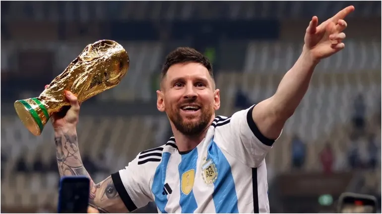

Biografía

Lionel Andrés Messi, nacido el 24 de junio de 1987 en Rosario, Argentina, es ampliamente reconocido como uno de los mejores futbolistas de todos los tiempos. Tras una destacada carrera en el FC Barcelona, donde ganó 35 títulos, incluyendo cuatro Ligas de Campeones, se unió al Paris Saint-Germain (PSG) en 2021. En 2023, Messi se trasladó al Inter Miami CF de la Major League Soccer (MLS), donde continúa demostrando su talento y liderazgo en el campo.
Logros
A lo largo de su carrera, Messi ha acumulado numerosos títulos y distinciones:
- 8 veces ganador del Balón de Oro.
- 6 Botas de Oro.
- 4 Ligas de Campeones de la UEFA.
- Campeón de la Copa América en 2021 y 2024.
- Campeón del Mundo con Argentina en 2022.
- Máximo goleador histórico del FC Barcelona y de La Liga.
- En 2024, lideró al Inter Miami CF a su primer título de la MLS Supporters' Shield.